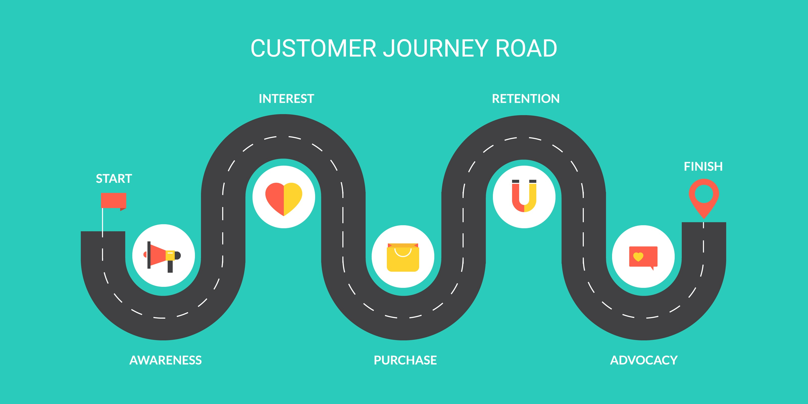

About Adediran Adeyemi — Freelance Data Scientist
Data Scientist Specializing in E-Commerce, Retail & SaaS Analytics
I'm Adediran Adeyemi, a freelance data scientist specializing in e-commerce and retail analytics. Most e-commerce and retail businesses don't have a data problem—the real challenge is using it to make confident, timely decisions.
You're tracking everything: website clicks, cart abandonment rates, customer journeys, sales patterns. The data exists. But when you need to decide whether to launch that new product line, fix your checkout flow, or figure out why repeat purchase rates suddenly dropped, you're back to guessing.
I work with e-commerce founders, retail operators, and SaaS teams who know their data holds answers but don't have time to become data scientists themselves. Over the past 4 years, I've helped online stores predict which customers will churn 60 days out, identify cart abandonment patterns that cost $500K annually, and forecast inventory demand with 80% accuracy.
I don't build AI for the sake of AI. I start with your business question, find the simplest path to an answer, and ship working solutions fast. You'll get churn prediction models that run in production, dashboards your team actually uses, and clear documentation so you're never locked into me.
Freelance Data Science Services for E-Commerce & Retail
E-Commerce & Retail Analytics Services
Churn prediction, cart abandonment analytics, customer lifetime value modeling, and predictive forecasting for online stores, retail businesses, and SaaS companies
Churn Prediction & Customer Retention
- Predict which customers will churn 30-90 days out
- Calculate customer lifetime value (CLV) to prioritize retention
- Build subscription churn models for SaaS businesses
- Identify at-risk customers before they leave
- Deploy models that improve as they learn new patterns
You need this when: Customer acquisition costs are rising but retention rates are falling.
Learn MoreCart Abandonment & Conversion Optimization
- Predict which shoppers will abandon carts before checkout
- Analyze checkout funnel friction points
- Build behavioral models for cart recovery timing
- Track revenue loss from abandonment patterns
- A/B test and measure intervention effectiveness
You need this when: 70%+ cart abandonment is costing you six figures annually.
Learn MoreInventory Forecasting & Demand Prediction
- Forecast sales and demand to prevent stockouts
- Predict seasonal trends and buying patterns
- Optimize inventory levels by product category
- Identify slow-moving vs. fast-moving inventory
- Build dynamic pricing models based on demand
You need this when: You're constantly either overstocked or sold out at the wrong time.
Learn MoreCustomer Analytics & Segmentation
- RFM analysis to identify your most valuable customers
- Customer lifetime value (CLV) modeling and prediction
- Behavioral segmentation for targeted marketing
- Cohort analysis to track retention over time
- Attribution modeling for marketing channel ROI
You need this when: You're treating all customers the same and wondering why CAC keeps rising.
Learn MoreNot Sure Which Service You Need?
Tell me the business question you're trying to answer. I'll recommend the fastest path to get you there.
Describe Your ChallengeData Science Portfolio — E-Commerce & Retail Projects
E-Commerce & Retail Data Science Projects
Real business problems solved with predictive analytics and machine learning. Interact with live demos below.
RAG-Based Financial Research Across 402 S&P MidCap Companies
Built a retrieval-augmented generation (RAG) system over 50M+ tokens of company filings and 8 years of financial statements. This system enables instant, explainable Q&A across hundreds of public companies, dramatically reducing research time from hours to seconds.
Bidirectional Yoruba-English Translation Model
Created a bidirectional Yoruba-English translator specifically designed for low-resource languages where mainstream tools like Google Translate fall short. The model handles cultural context and idiomatic expressions that literal translations miss.
Property Prices Prediction Model
Built a machine learning model that predicts NYC property values with 80% accuracy, giving investors and real estate agents instant valuation estimates. The system eliminates weeks of waiting for professional appraisals while maintaining high reliability.
Retail Analysis
Analyzed a retail business experiencing a catastrophic 90% revenue decline. Through comprehensive dashboard analysis of historical sales patterns, I identified the root cause: an 85% drop in repeat customer retention. The insights led to targeted retention strategies that stabilized the business.

Product Returns Analysis
Deep-dive analysis into product return patterns revealing that 27% of revenue was being eroded by returns. Identified specific products, customer segments, and purchasing behaviors driving returns, enabling targeted product improvements and smarter inventory management.
Lead Scoring Algorithm
Built a machine learning model that scores leads by purchase likelihood with 95%+ accuracy. Sales teams can now focus exclusively on high-intent prospects instead of chasing everyone, dramatically improving close rates and sales efficiency.

Customer Journey Analysis
Mapped user paths through 10,000 sessions to identify conversion killers and engagement drivers. The path analysis revealed specific friction points where users consistently abandoned the funnel, directly informing UX improvements that increased conversion rates.
Restaurant Research Analysis
Reverse-engineered how a major restaurant chain selects new markets by analyzing 50+ locations. The geospatial analysis revealed hidden patterns in their expansion strategy — demographic density, competitor proximity, and infrastructure factors — that others could learn from or compete against.
Customer Reviews Classification (ML)
Instead of manually reading thousands of customer reviews, I built an NLP model that automatically categorizes complaints and praise. The product team now gets instant visibility into what's frustrating users, enabling rapid response to emerging issues.
Predict Used Car Prices (Nigeria Market)
Built a price prediction model specifically for the Nigerian used car market. Dealers and buyers now get instant, data-backed estimates instead of negotiating in the dark. The model is trained on actual Nigerian market data for accurate local pricing.
Survey Analysis
Analyzed banking customer surveys to uncover what truly drives satisfaction and loyalty. Built an interactive dashboard that lets leadership explore satisfaction patterns by customer segment and service type, revealing opportunities to improve retention.
See a project similar to what you need? Let's talk about building your version.
Tell Me What You're Trying to SolveHire a Freelance Data Scientist — Let's Talk
Got a Data Problem? Let's Figure It Out Together
No pitch. No obligation. Just a conversation about your data challenge and whether I can help. First call is free.
Location
Remote Worldwide
Available globally (timezone-flexible)
E-Commerce Data Science Blog & Insights
E-Commerce & Retail Data Science Insights
Real tactics for predicting churn, understanding customers, and making data-driven decisions in e-commerce and retail
-
80% of Your Revenue Comes From 20% of Your Customers. Can You Name Them?
-
Your Best Customers Are Leaving. Here's How to Know 90 Days Early.
-
Stop Sending the Same Emails to Everyone. Here's How to Personalize at Scale.